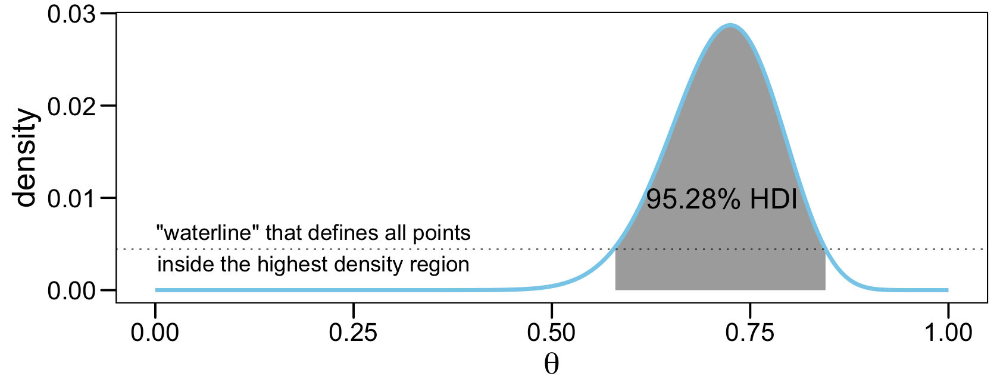
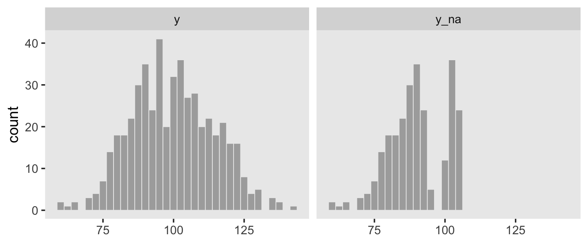
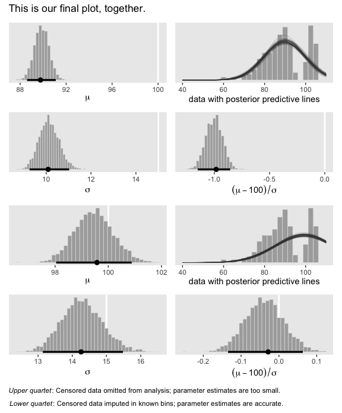

25 Tools in the Trunk
“This chapter includes some important topics that apply to many different models throughout the book… The sections can be read independently of each other and at any time” (Kruschke, 2015, p. 721).
25.1 Reporting a Bayesian analysis
Bayesian data analyses are not yet standard procedure in many fields of research, and no conventional format for reporting them has been established. Therefore, the researcher who reports a Bayesian analysis must be sensitive to the background knowledge of his or her specific audience, and must frame the description accordingly. (p. 721)
At the time of this writing (early 2020), this is still the case. See Aczel et al. (2020), Discussion points for Bayesian inference, for a recent discussion from several Bayesian scholars.
25.1.1 Essential points.
Recall the basic steps of a Bayesian analysis from Section 2.3 (p. 25): Identify the data, define a descriptive model, specify a prior, compute the posterior distribution, interpret the posterior distribution, and, check that the model is a reasonable description of the data. Those steps are in logical order, with each step building on the previous step. That logical order should be preserved in the report of the analysis. (p. 722)
Kruschke then gave recommendations for motivating Bayesian inference. His (2018) paper with Liddell, The Bayesian New Statistics: Hypothesis testing, estimation, meta-analysis, and power analysis from a Bayesian perspective, might be helpful in this regard. Many of the other points Kruschke made in this section (e.g., adequately reporting the data structure, the priors, evidence for convergence) can be handled by adopting open science practices.
If your data and research questions are simple and straightforward, you might find it easy to detail these and other concerns in the primary manuscript. The harsh reality is many journals place tight constraints on word and/or page limits. If your projects are not of the simple and straightforward type, supplemental materials are your friend. Regardless of a journal’s policy on hosting supplemental materials on the official journal website, you can detail your data, priors, MCMC diagnostics, and all the other fine-grained details of your analysis in supplemental documents hosted in publicly-accessible repositories like the Open Science Framework (OSF). If possible, do consider making your data openly available. Regardless of the status of your data, please consider making all your R scripts available as supplementary material. To reiterate from Chapter 3, I strongly recommend checking out R Notebooks for that purpose. They are a type of R Markdown document with augmentations that make them more useful for working scientists. You can learn more about them here and here. And for a more comprehensive overview, check out Xie, Allaire, and Grolemund’s (2020) R markdown: The definitive guide.
25.1.2 Optional points.
For more thoughts on robustness checks, check out a couple Gelman’s blog posts, What’s the point of a robustness check? and Robustness checks are a joke, along with the action in the comments section.
In addition to posterior predictive checks, which are great (see Kruschke, 2013), consider prior predictive checks, too. For a great introduction to the topic, check out Gabry, Simpson, Vehtari, Betancourt, and Gelman’s (2019) Visualization in Bayesian workflow.
25.1.3 Helpful points.
For more ideas on open data, check out Rouder’s (2016) The what, why, and how of born-open data. You might also check out Klein and colleagues’ (2018) A practical guide for transparency in psychological science and Martone, Garcia-Castro, and VandenBos’s (2018) Data sharing in psychology.
As to posting your model fits, this could be done in any number of ways, including as official supplemental materials hosted by the journal, on GitHub, or on the OSF. At a base level, this means saving your fits as external files. We’ve already been modeling this with our brm() code throughout this book. With the save argument, we saved the model fits within the fits folder on GitHub. You might adopt a similar approach. But do be warned: brms fit objects contain a copy of the data used to create them. For example, here’s how we might reload fit24.1 from last chapter.
By indexing the fit object with $data, you can see the data.
## Rows: 16
## Columns: 4
## $ Count <dbl> 20, 68, 5, 15, 94, 7, 16, 10, 84, 119, 29, 54, 17, 26, 14,…
## $ Hair <fct> Black, Black, Black, Black, Blond, Blond, Blond, Blond, Br…
## $ Eye <chr> "Blue", "Brown", "Green", "Hazel", "Blue", "Brown", "Green…
## $ `Hair:Eye` <chr> "Black_Blue", "Black_Brown", "Black_Green", "Black_Hazel",…Here’s a quick way to remove the data from the fit object.
Confirm it worked.
## NULLHappily, the rest of the information is still there for you. E.g., here’s the summary.
## Family: poisson
## Links: mu = log
## Formula: Count ~ 1 + (1 | Hair) + (1 | Eye) + (1 | Hair:Eye)
## Data: my_data (Number of observations: )
## Samples: 4 chains, each with iter = 3000; warmup = 1000; thin = 1;
## total post-warmup samples = 8000
##
## Group-Level Effects:
## ~Eye (Number of levels: 4)
## Estimate Est.Error l-95% CI u-95% CI Rhat Bulk_ESS Tail_ESS
## sd(Intercept) 1.83 1.62 0.29 6.37 1.00 3494 5176
##
## ~Hair (Number of levels: 4)
## Estimate Est.Error l-95% CI u-95% CI Rhat Bulk_ESS Tail_ESS
## sd(Intercept) 1.93 1.57 0.36 6.16 1.00 3326 5218
##
## ~Hair:Eye (Number of levels: 16)
## Estimate Est.Error l-95% CI u-95% CI Rhat Bulk_ESS Tail_ESS
## sd(Intercept) 0.94 0.29 0.54 1.63 1.00 3344 5137
##
## Population-Level Effects:
## Estimate Est.Error l-95% CI u-95% CI Rhat Bulk_ESS Tail_ESS
## Intercept 3.22 1.54 -0.04 6.49 1.00 4685 4300
##
## Samples were drawn using sampling(NUTS). For each parameter, Bulk_ESS
## and Tail_ESS are effective sample size measures, and Rhat is the potential
## scale reduction factor on split chains (at convergence, Rhat = 1).25.2 Functions for computing highest density intervals
You can find a copy of Kruschke’s scripts, including DBDA2E-utilities.R, at https://github.com/ASKurz/Doing-Bayesian-Data-Analysis-in-brms-and-the-tidyverse/tree/master/data.R.
25.2.1 R code for computing HDI of a grid approximation.
We can imagine the grid approximation of a distribution as a landscape of poles sticking up from each point on the parameter grid, with the height of each pole indicating the probability mass at that discrete point. We can imagine the highest density region by visualizing a rising tide: We gradually flood the landscape, monitoring the total mass of the poles that protrude above water, stopping the flood when 95% (say) of the mass remains protruding. The waterline at that moment defines the highest density region (e.g., Hyndman, 1996). (p. 725)
HDIofGrid <- function(probMassVec, credMass = 0.95) {
# Arguments:
# probMassVec is a vector of probability masses at each grid point.
# credMass is the desired mass of the HDI region.
# Return value:
# A list with components:
# indices is a vector of indices that are in the HDI
# mass is the total mass of the included indices
# height is the smallest component probability mass in the HDI
# Example of use: For determining HDI of a beta(30,12) distribution
# approximated on a grid:
# > probDensityVec = dbeta( seq(0,1,length=201) , 30 , 12 )
# > probMassVec = probDensityVec / sum( probDensityVec )
# > HDIinfo = HDIofGrid( probMassVec )
# > show( HDIinfo )
sortedProbMass <- sort(probMassVec, decreasing = TRUE)
HDIheightIdx <- min(which(cumsum(sortedProbMass) >= credMass))
HDIheight <- sortedProbMass[HDIheightIdx]
HDImass <- sum(probMassVec[probMassVec >= HDIheight])
return(list(indices = which(probMassVec >= HDIheight),
mass = HDImass, height = HDIheight))
}I found Kruschke’s description of his HDIofGrid() a bit opaque. Happily, we can understand this function with a little help from an example posted at https://rdrr.io/github/kyusque/DBDA2E-utilities/man/HDIofGrid.html.
prob_density_vec <- dbeta(seq(0, 1, length = 201), 30, 12)
prob_mass_vec <- prob_density_vec / sum(prob_density_vec)
HDI_info <- HDIofGrid(prob_mass_vec)
show(HDI_info)## $indices
## [1] 117 118 119 120 121 122 123 124 125 126 127 128 129 130 131 132 133 134 135
## [20] 136 137 138 139 140 141 142 143 144 145 146 147 148 149 150 151 152 153 154
## [39] 155 156 157 158 159 160 161 162 163 164 165 166 167 168 169 170
##
## $mass
## [1] 0.9528232
##
## $height
## [1] 0.004448336To walk that through a bit, prob_density_vec is a vector of density values for \(\operatorname{beta} (30, 12)\) based on 201 evenly-spaced values spanning the parameter space for \(\theta\) (i.e., from 0 to 1). In the second line, we converted those density values to the probability metric by dividing each by their sum, which we then saved as prob_mass_vec. In the third line we shoved those probability values into Kruschke’s HDIofGrid() and saved the results as HDI_info. The output of the fourth line, show(HDI_info), showed us the results (i.e., the contents of HDI_info).
As to those results, the values in saved as $indices are the row numbers for all cases in prob_mass_vec that were within the HDI. The value in $mass showed the actual width of the HDI. Because we’re only working with finite samples (i.e., length = 201), we won’t likely get a perfect 95% HDI. The value in $height is the density value for the waterline that defines the highest density region. A plot might make that less abstract.
# wrangle
tibble(row = 1:length(prob_density_vec),
theta = seq(0, 1, length = length(prob_density_vec)),
density = prob_mass_vec,
cred = if_else(row %in% HDI_info$indices, 1, 0)) %>%
# plot
ggplot(aes(x = theta, y = density)) +
# HDI
geom_ribbon(data = . %>%
filter(cred == 1),
aes(ymin = 0, ymax = density),
fill = "grey50") +
# density line
geom_line(color = "grey33") +
# waterline
geom_hline(yintercept = HDI_info$height, linetype = 2, color = "skyblue") +
# fluff
annotate(geom = "text", x = .2, y = 0.0046,
label = '"waterline" that defines all points\ninside the highest density region') +
annotate(geom = "text", x = .715, y = 0.01,
label = "95.28% HDI", color = "grey92", size = 5) +
xlab(expression(theta)) +
theme(panel.grid = element_blank())
25.2.2 HDI of unimodal distribution is shortest interval.
The algorithms [in the next sections] find the HDI by searching among candidate intervals of mass \(M\). The shortest one found is declared to be the HDI. It is an approximation, of course. See Chen & Shao (1999) for more details, and Chen, He, Shao, and Xu (2003) for dealing with the unusual situation of multimodal distributions. (p. 727)
25.2.3 R code for computing HDI of a MCMC sample.
In this section, Kruschke provided the code for his HDIofMCMC() function. We recreate it, below, with a few mild formatting changes.
HDIofMCMC <- function(sampleVec, credMass = .95) {
# Computes highest density interval from a sample of representative values,
# estimated as shortest credible interval.
# Arguments:
# sampleVec
# is a vector of representative values from a probability distribution.
# credMass
# is a scalar between 0 and 1, indicating the mass within the credible
# interval that is to be estimated.
# Value:
# HDIlim is a vector containing the limits of the HDI
sortedPts <- sort(sampleVec)
ciIdxInc <- ceiling(credMass * length(sortedPts))
nCIs <- length(sortedPts) - ciIdxInc
ciWidth <- rep(0, nCIs)
for (i in 1:nCIs) {
ciWidth[i] <- sortedPts[i + ciIdxInc] - sortedPts[i]
}
HDImin <- sortedPts[which.min(ciWidth)]
HDImax <- sortedPts[which.min(ciWidth) + ciIdxInc]
HDIlim <- c(HDImin, HDImax)
return(HDIlim)
}Let’s continue working with fit24.1 to see how Kruschke’s HDIofMCMC() works. First we need to extract the posterior draws.
Here’s how you might use the function to get the HDIs for the first hierarchical variance parameter.
## [1] 0.07972936 5.02625928Kruschke’s HDIofMCMC() works very much the same as the summary functions from tidybayes. For example, here’s good old tidybayes::mode_hdi().
## y ymin ymax .width .point .interval
## 1 0.8320875 0.07972936 5.026259 0.95 mode hdiIf you’d like to use tidybayes to just pull the HDIs without the extra information, just use the hdi() function.
## [,1] [,2]
## [1,] 0.07972936 5.026259Just in case you’re curious, Kruschke’s HDIofMCMC() function returns the same information as tidybayes::hdi(). Let’s confirm.
## [,1] [,2]
## [1,] TRUE TRUEIdentical.
25.2.4 R code for computing HDI of a function.
The function described in this section finds the HDI of a unimodal probability density function that is specified mathematically in R. For example, the function can find HDI’s of normal densities or of beta densities or of gamma densities, because those densities are specified as functions in R. (p. 728).
If you recall, we’ve been using this funciton off and on since Chapter 4. Here is it, again, with mildly reformated code and parameter names.
hdi_of_icdf <- function(name, width = .95, tol = 1e-8, ... ) {
# Arguments:
# `name` is R's name for the inverse cumulative density function
# of the distribution.
# `width` is the desired mass of the HDI region.
# `tol` is passed to R's optimize function.
# Return value:
# Highest density iterval (HDI) limits in a vector.
# Example of use: For determining HDI of a beta(30, 12) distribution, type
# `hdi_of_icdf(qbeta, shape1 = 30, shape2 = 12)`
# Notice that the parameters of the `name` must be explicitly stated;
# e.g., `hdi_of_icdf(qbeta, 30, 12)` does not work.
# Adapted and corrected from Greg Snow's TeachingDemos package.
incredible_mass <- 1.0 - width
interval_width <- function(low_tail_prob, name, width, ...) {
name(width + low_tail_prob, ...) - name(low_tail_prob, ...)
}
opt_info <- optimize(interval_width, c(0, incredible_mass),
name = name, width = width,
tol = tol, ...)
hdi_lower_tail_prob <- opt_info$minimum
return(c(name(hdi_lower_tail_prob, ...),
name(width + hdi_lower_tail_prob, ...)))
}Here’s how it works for the standard normal distribution.
## [1] -1.959964 1.959964By default, it returns 95% HDIs. Here’s how it’d work if you wanted the 80% intervals for \(\operatorname{beta}(2, 2)\).
## [1] 0.1958001 0.804199925.3 Reparameterization
There are situations in which one parameterization is intuitive to express a distribution, but a different parameterization is required for mathematical convenience. For example, we may think intuitively of the standard deviation of a normal distribution, but have to parameterize the distribution in terms of the precision (i.e., reciprocal of the variance). (p. 729)
The details in the rest of this section are beyond the scope of this project.
25.4 Censored Data in JAGS brms
“In many situations some data are censored, which means that their values are known only within a certain range” (p. 732) Happily, brms is capable of handling censored variables. The setup is a little different from how Kruschke described for JAGS. From the brmsformula section of the brms reference manual (Bürkner, 2020g), we read:
With the exception of categorical, ordinal, and mixture families, left, right, and interval censoring can be modeled through
y | cens(censored) ~ predictors. The censoring variable (namedcensoredin this example) should contain the values'left','none','right', and'interval'(or equivalently-1,0,1, and2) to indicate that the corresponding observation is left censored, not censored, right censored, or interval censored. For interval censored data, a second variable (let’s call ity2) has to be passed tocens. In this case, the formula has the structurey | cens(censored,y2) ~ predictors. While the lower bounds are given iny, the upper bounds are given iny2for interval censored data. Intervals are assumed to be open on the left and closed on the right:(y,y2].
We’ll make sense of all this in just a moment. First, let’s see how Kruschke described the example in the text.
To illustrate why it is important to include censored data in the analysis, consider a case in which \(N = 500\) values are generated randomly from a normal distribution with \(\mu = 100\) and \(\sigma = 15\). Suppose that values above 106 are censored, as are values in the interval between 94 and 100. For the censored values, all we know is the interval in which they occurred, but not their exact value. (p. 732)
I’m now aware that we have access to Kruschke’s censored data, so we’ll just make our own based on his description. We’ll start off by simulating the idealized uncensored data, y, based on \(\operatorname{Normal} (100, 15)\).
To repeat, Kruschke described two kinds of censoring:
- “values above 106 are censored”,
- “as are values in the interval between 94 and 100.”
This leaves us with three thresholds. For simplicity, we’ll just name them t1, t2 and t3, with their order based on their numeric values.
In the last sentence in the block quote from the brms reference manual, we learned “intervals are assumed to be open on the left and closed on the right: (y,y2].” It’s a little unclear, to me, if this is how Kruschke defined his intervals, but since we’re working with brms we’ll just use this convention. Thus, we will define “values in the interval between 94 and 100” as y >= t1 & y < t2. We will define “values above 106” as y > t3.
d <-
d %>%
mutate(y1 = if_else(y >= t1 & y < t2, t1,
if_else(y > t3, t3, y)),
y2 = if_else(y >= t1 & y < t2, t2, y),
cen = if_else(y >= t1 & y < t2, "interval",
if_else(y > t3, "right", "none")))
d## # A tibble: 500 x 4
## y y1 y2 cen
## <dbl> <dbl> <dbl> <chr>
## 1 96.8 94 100 interval
## 2 84.4 84.4 84.4 none
## 3 82.7 82.7 82.7 none
## 4 105. 105. 105. none
## 5 77.5 77.5 77.5 none
## 6 93.3 93.3 93.3 none
## 7 126. 106 126. right
## 8 108. 106 108. right
## 9 101. 101. 101. none
## 10 99.1 94 100 interval
## # … with 490 more rowsFirst look at the new cen column. When the values in y are not censored, we see "none". Otherwise, cen indicates if they are right censored (i.e., "right") or interval censored (i.e., "interval"). We used those exact terms based on the block quote from the brms reference manual. Now look at y1. When cen == "interval", those values are the same as the original column y. The same goes for y2. Otherwise, the y1 column contains the relevant lower thresholds values. That is, when cen == "interval", we see the value for t1 (i.e., 94). When cen == "right", we see the value for t3 (i.e., 106). For the interval-censored rows, the values in y2 contain the values for the upper threshold (i.e., t2, which is 100). But when the rows are right censored, the values in y2 are simply the same as the original y values. In the rows where cen == "right", it really doesn’t matter what values you put in the y2 column as long as they aren’t NA. This is because brms will only reference them for rows in which cen == "interval".
I would not spend any time trying to equate this with Kruschke’s exposition at the top of page 734. This is a different coding method from what you might use for JAGS. Let’s make one more data change. Here we’ll make a new variable, y_na, that only has values for which cen == "none".
## # A tibble: 500 x 5
## y y1 y2 cen y_na
## <dbl> <dbl> <dbl> <chr> <dbl>
## 1 96.8 94 100 interval NA
## 2 84.4 84.4 84.4 none 84.4
## 3 82.7 82.7 82.7 none 82.7
## 4 105. 105. 105. none 105.
## 5 77.5 77.5 77.5 none 77.5
## 6 93.3 93.3 93.3 none 93.3
## 7 126. 106 126. right NA
## 8 108. 106 108. right NA
## 9 101. 101. 101. none 101.
## 10 99.1 94 100 interval NA
## # … with 490 more rowsIn the text, Kruschke reported he had 255 uncensored values (p. 732). Here’s the breakdown of our data.
## # A tibble: 3 x 2
## cen n
## <chr> <int>
## 1 interval 76
## 2 none 257
## 3 right 167We got really close! Let’s look at what we’ve done with a couple histograms.
d %>%
pivot_longer(c(y, y_na)) %>%
ggplot(aes(x = value)) +
geom_histogram(size = .25, binwidth = 2.5, fill = "grey67", color = "grey92") +
xlab(NULL) +
theme(panel.grid = element_blank()) +
facet_wrap(~name, ncol = 2)
Here’s how to fit the first model, which only uses the uncensored values.
# define the stanvars
mean_y <- mean(d$y_na, na.rm = T)
sd_y <- sd(d$y_na, na.rm = T)
stanvars <-
stanvar(mean_y, name = "mean_y") +
stanvar(sd_y, name = "sd_y")
# fit the model
fit25.1 <-
brm(data = d,
family = gaussian,
y_na ~ 1,
prior = c(prior(normal(mean_y, sd_y * 100), class = Intercept),
prior(normal(0, sd_y), class = sigma)),
chains = 4, cores = 4,
stanvars = stanvars,
file = "fits/fit25.01.rds")Check the summary for the naïve model.
## Family: gaussian
## Links: mu = identity; sigma = identity
## Formula: y_na ~ 1
## Data: d (Number of observations: 257)
## Samples: 4 chains, each with iter = 2000; warmup = 1000; thin = 1;
## total post-warmup samples = 4000
##
## Population-Level Effects:
## Estimate Est.Error l-95% CI u-95% CI Rhat Bulk_ESS Tail_ESS
## Intercept 89.87 0.64 88.62 91.14 1.00 2840 2566
##
## Family Specific Parameters:
## Estimate Est.Error l-95% CI u-95% CI Rhat Bulk_ESS Tail_ESS
## sigma 10.14 0.45 9.30 11.07 1.00 3860 2727
##
## Samples were drawn using sampling(NUTS). For each parameter, Bulk_ESS
## and Tail_ESS are effective sample size measures, and Rhat is the potential
## scale reduction factor on split chains (at convergence, Rhat = 1).Relative to the true data-generating process for the original variable y, those parameters look pretty biased. Now let’s practice fitting censored model.
This model is one of the rare occasions where we’ll set out initial values for the model intercept. In my first few attempts, brm() had great difficulty initializing the chains using the default initial values. We’ll help it out by setting them at mean_y. Recall that when you set custom initial values in brms, you save them in a list with the number of lists equaling the number of HMC chains. Because we’re using the default chains = 4, well need four lists of intercept start values, mean_y. You can set them to different values, if you’d like.
inits <- list(Intercept = mean_y)
inits_list <- list(inits, inits, inits, inits)
fit25.2 <-
brm(data = d,
family = gaussian,
y1 | cens(cen, y2) ~ 1,
prior = c(prior(normal(mean_y, sd_y * 100), class = Intercept),
prior(normal(0, sd_y), class = sigma)),
chains = 4, cores = 4,
stanvars = stanvars,
inits = inits_list, # here we insert our start values for the intercept
file = "fits/fit25.02.rds")Now check the summary for the model accounting for the censoring.
## Family: gaussian
## Links: mu = identity; sigma = identity
## Formula: y1 | cens(cen, y2) ~ 1
## Data: d (Number of observations: 500)
## Samples: 4 chains, each with iter = 2000; warmup = 1000; thin = 1;
## total post-warmup samples = 4000
##
## Population-Level Effects:
## Estimate Est.Error l-95% CI u-95% CI Rhat Bulk_ESS Tail_ESS
## Intercept 99.46 0.73 98.04 100.90 1.00 2392 2387
##
## Family Specific Parameters:
## Estimate Est.Error l-95% CI u-95% CI Rhat Bulk_ESS Tail_ESS
## sigma 14.29 0.60 13.18 15.53 1.00 2411 2049
##
## Samples were drawn using sampling(NUTS). For each parameter, Bulk_ESS
## and Tail_ESS are effective sample size measures, and Rhat is the potential
## scale reduction factor on split chains (at convergence, Rhat = 1).All 500 cases were used (Number of observations: 500) and the model did a great job capturing the data-generating parameters. Before we can make our version of Figure 25.4, we’ll need to extract the posterior draws. We’ll start with fit25.1.
post <-
posterior_samples(fit25.1) %>%
mutate(mu = b_Intercept,
`(mu-100)/sigma` = (b_Intercept - 100) / sigma)
head(post)## b_Intercept sigma lp__ mu (mu-100)/sigma
## 1 89.01128 10.902672 -969.3481 89.01128 -1.0078924
## 2 89.78891 9.650831 -967.5287 89.78891 -1.0580531
## 3 89.96439 9.786381 -967.2537 89.96439 -1.0254674
## 4 90.20543 9.740210 -967.4664 90.20543 -1.0055812
## 5 90.07634 10.064154 -967.0646 90.07634 -0.9860402
## 6 90.43041 9.762487 -967.6899 90.43041 -0.9802415These subplots look a lot like those from back in Section 16.2. Since this is the last plot of the book, it seems like we should make the effort to stitch all the subplots together with patchwork. To reduce some of the code redundancy with the six subplots of the marginal posteriors, we’ll make a custom geom, geom_hist().
geom_hist <- function(xintercept = xintercept, binwidth = binwidth, ...) {
list(
geom_vline(xintercept = xintercept, color = "white", size = 1),
geom_histogram(fill = "grey67", color = "grey92", size = .2, binwidth = binwidth),
stat_pointintervalh(aes(y = 0), point_interval = mode_hdi, .width = .95),
scale_y_continuous(NULL, breaks = NULL),
theme(panel.grid = element_blank())
)
}Now we have our geom_hist(), here are the first three histograms for the marginal posteriors from fit25.1.
p1 <-
post %>%
ggplot(aes(x = mu)) +
geom_hist(xintercept = 100, binwidth = 0.25) +
xlab(expression(mu))
p3 <-
post %>%
ggplot(aes(x = sigma)) +
geom_hist(xintercept = 15, binwidth = 0.1) +
xlab(expression(sigma))
p4 <-
post %>%
ggplot(aes(x = `(mu-100)/sigma`)) +
geom_hist(xintercept = 0, binwidth = 0.025) +
xlab(expression((mu-100)/sigma))The histogram of the censored data with the posterior predictive density curves superimposed will take a little more work.
n_lines <- 50
p2 <-
post %>%
mutate(iter = 1:n()) %>%
slice(1:n_lines) %>%
expand(nesting(mu, sigma, iter),
y_na = seq(from = 40, to = 120, by = 1)) %>%
mutate(density = dnorm(x = y_na, mean = mu, sd = sigma)) %>%
ggplot(aes(x = y_na)) +
geom_histogram(data = d,
aes(y = stat(density)),
color = "grey92", fill = "grey67",
size = .2, binwidth = 2.5) +
geom_line(aes(y = density, group = iter),
size = 1/4, alpha = 1/3, color = "grey25") +
scale_x_continuous("data with posterior predictive lines", limits = c(40, 110)) +
scale_y_continuous(NULL, breaks = NULL) +
theme(panel.grid = element_blank())Now extract the posterior draws from our censored model, fit25.2, and repeat the process.
post <-
posterior_samples(fit25.2) %>%
mutate(mu = b_Intercept,
`(mu-100)/sigma` = (b_Intercept - 100) / sigma)
p5 <-
post %>%
ggplot(aes(x = mu)) +
geom_hist(xintercept = 100, binwidth = 0.15) +
xlab(expression(mu))
p7 <-
post %>%
ggplot(aes(x = sigma)) +
geom_hist(xintercept = 15, binwidth = 0.1) +
xlab(expression(sigma))
p8 <-
post %>%
ggplot(aes(x = `(mu-100)/sigma`)) +
geom_hist(xintercept = 0, binwidth = 0.01) +
xlab(expression((mu-100)/sigma))
p6 <-
post %>%
mutate(iter = 1:n()) %>%
slice(1:n_lines) %>%
expand(nesting(mu, sigma, iter),
y_na = seq(from = 40, to = 120, by = 1)) %>%
mutate(density = dnorm(x = y_na, mean = mu, sd = sigma)) %>%
ggplot(aes(x = y_na)) +
geom_histogram(data = d,
aes(y = stat(density)),
color = "grey92", fill = "grey67",
size = .2, binwidth = 2.5) +
geom_line(aes(y = density, group = iter),
size = 1/4, alpha = 1/3, color = "grey25") +
scale_x_continuous("data with posterior predictive lines", limits = c(40, 110)) +
scale_y_continuous(NULL, breaks = NULL) +
theme(panel.grid = element_blank())Load patchwork, combine the subplots, and annotate a bit.
library(patchwork)
((p1 | p2) / (p3 | p4) / (p5 | p6) / (p7 | p8)) +
plot_annotation(title = "This is our final plot, together.",
caption = expression(atop(italic("Upper quartet")*": Censored data omitted from analysis; parameter estimates are too small. ", italic("Lower quartet")*": Censored data imputed in known bins; parameter estimates are accurate."))) &
theme(plot.caption = element_text(hjust = 0))
25.5 What Next?
“If you have made it this far and you are looking for more, you might peruse posts at [Kruschke’s] blog, [https://doingbayesiandataanalysis.blogspot.com/], and search there for topics that interest you.” In addition to the other references Kruschke mentioned, you might also check out McElreath’s (2015) Statistical rethinking. The first edition came out in 2015 and the second was released sometime in early 2020. Much like this project, I have recoded Statistical rethinking in a bookdown form, here (Kurz, 2020). You can also find other tutorial material at my academic blog, https://solomonkurz.netlify.com/post/.
Session info
## R version 3.6.3 (2020-02-29)
## Platform: x86_64-apple-darwin15.6.0 (64-bit)
## Running under: macOS Catalina 10.15.3
##
## Matrix products: default
## BLAS: /Library/Frameworks/R.framework/Versions/3.6/Resources/lib/libRblas.0.dylib
## LAPACK: /Library/Frameworks/R.framework/Versions/3.6/Resources/lib/libRlapack.dylib
##
## locale:
## [1] en_US.UTF-8/en_US.UTF-8/en_US.UTF-8/C/en_US.UTF-8/en_US.UTF-8
##
## attached base packages:
## [1] stats graphics grDevices utils datasets methods base
##
## other attached packages:
## [1] patchwork_1.0.0 tidybayes_2.0.3.9000 brms_2.12.0
## [4] Rcpp_1.0.4.6 forcats_0.5.0 stringr_1.4.0
## [7] dplyr_0.8.5 purrr_0.3.4 readr_1.3.1
## [10] tidyr_1.0.2 tibble_3.0.1 ggplot2_3.3.0
## [13] tidyverse_1.3.0
##
## loaded via a namespace (and not attached):
## [1] colorspace_1.4-1 ellipsis_0.3.0 ggridges_0.5.2
## [4] rsconnect_0.8.16 markdown_1.1 base64enc_0.1-3
## [7] fs_1.4.1 rstudioapi_0.11 farver_2.0.3
## [10] rstan_2.19.3 svUnit_1.0.3 DT_0.13
## [13] fansi_0.4.1 mvtnorm_1.1-0 lubridate_1.7.8
## [16] xml2_1.3.1 bridgesampling_1.0-0 knitr_1.28
## [19] shinythemes_1.1.2 bayesplot_1.7.1 jsonlite_1.6.1
## [22] broom_0.5.5 dbplyr_1.4.2 shiny_1.4.0.2
## [25] compiler_3.6.3 httr_1.4.1 backports_1.1.6
## [28] assertthat_0.2.1 Matrix_1.2-18 fastmap_1.0.1
## [31] cli_2.0.2 later_1.0.0 htmltools_0.4.0
## [34] prettyunits_1.1.1 tools_3.6.3 igraph_1.2.5
## [37] coda_0.19-3 gtable_0.3.0 glue_1.4.0
## [40] reshape2_1.4.4 cellranger_1.1.0 vctrs_0.3.0
## [43] nlme_3.1-144 crosstalk_1.1.0.1 xfun_0.13
## [46] ps_1.3.3 rvest_0.3.5 mime_0.9
## [49] miniUI_0.1.1.1 lifecycle_0.2.0 gtools_3.8.2
## [52] zoo_1.8-7 scales_1.1.1 colourpicker_1.0
## [55] hms_0.5.3 promises_1.1.0 Brobdingnag_1.2-6
## [58] parallel_3.6.3 inline_0.3.15 shinystan_2.5.0
## [61] yaml_2.2.1 gridExtra_2.3 loo_2.2.0
## [64] StanHeaders_2.21.0-1 stringi_1.4.6 dygraphs_1.1.1.6
## [67] pkgbuild_1.0.8 rlang_0.4.6 pkgconfig_2.0.3
## [70] matrixStats_0.56.0 HDInterval_0.2.0 evaluate_0.14
## [73] lattice_0.20-38 rstantools_2.0.0 htmlwidgets_1.5.1
## [76] labeling_0.3 processx_3.4.2 tidyselect_1.0.0
## [79] plyr_1.8.6 magrittr_1.5 bookdown_0.18
## [82] R6_2.4.1 generics_0.0.2 DBI_1.1.0
## [85] pillar_1.4.4 haven_2.2.0 withr_2.2.0
## [88] xts_0.12-0 abind_1.4-5 modelr_0.1.6
## [91] crayon_1.3.4 arrayhelpers_1.1-0 utf8_1.1.4
## [94] rmarkdown_2.1 grid_3.6.3 readxl_1.3.1
## [97] callr_3.4.3 threejs_0.3.3 reprex_0.3.0
## [100] digest_0.6.25 xtable_1.8-4 httpuv_1.5.2
## [103] stats4_3.6.3 munsell_0.5.0 shinyjs_1.1References
Aczel, B., Hoekstra, R., Gelman, A., Wagenmakers, E.-J., Klugkist, I. G., Rouder, J. N., Vandekerckhove, J., Lee, M. D., Morey, R. D., Vanpaemel, W., Dienes, Z., & van Ravenzwaaij, D. (2020). Discussion points for Bayesian inference. Nature Human Behaviour, 1–3. https://doi.org/10.1038/s41562-019-0807-z
Bürkner, P.-C. (2020g). brms reference manual, Version 2.12.0. https://CRAN.R-project.org/package=brms/brms.pdf
Chen, M.-H., He, X., Shao, Q.-M., & Xu, H. (2003). A Monte Carlo gap test in computing HPD regions. In Development of Modern Statistics and Related Topics: Vol. Volume 1 (pp. 38–52). World Scientific. https://doi.org/10.1142/9789812796707_0004
Chen, M.-H., & Shao, Q.-M. (1999). Monte Carlo estimation of Bayesian credible and HPD intervals. Journal of Computational and Graphical Statistics, 8(1), 69–92. https://doi.org/10.1080/10618600.1999.10474802
Gabry, J., Simpson, D., Vehtari, A., Betancourt, M., & Gelman, A. (2019). Visualization in Bayesian workflow. Journal of the Royal Statistical Society: Series A (Statistics in Society), 182(2), 389–402. https://doi.org/10.1111/rssa.12378
Hyndman, R. J. (1996). Computing and graphing highest density regions. The American Statistician, 50(2), 120–126. https://doi.org/10.1080/00031305.1996.10474359
Klein, O., Hardwicke, T. E., Aust, F., Breuer, J., Danielsson, H., Hofelich Mohr, A., IJzerman, H., Nilsonne, G., Vanpaemel, W., & Frank, M. C. (2018). A practical guide for transparency in psychological science. Collabra: Psychology, 4(1), 1–15. https://doi.org/10.1525/collabra.158
Kruschke, J. K. (2013). Posterior predictive checks can and should be Bayesian: Comment on Gelman and Shalizi, “Philosophy and the practice of Bayesian statistics”. British Journal of Mathematical and Statistical Psychology, 66(1), 45–56. https://doi.org/10.1111/j.2044-8317.2012.02063.x
Kruschke, J. K. (2015). Doing Bayesian data analysis: A tutorial with R, JAGS, and Stan. Academic Press. https://sites.google.com/site/doingbayesiandataanalysis/
Kruschke, J. K., & Liddell, T. M. (2018). The Bayesian New Statistics: Hypothesis testing, estimation, meta-analysis, and power analysis from a Bayesian perspective. Psychonomic Bulletin & Review, 25(1), 178–206. https://doi.org/10.3758/s13423-016-1221-4
Kurz, A. S. (2020). Statistical rethinking with brms, ggplot2, and the tidyverse. https://doi.org/10.5281/zenodo.3693202.svg
{kind=link}
Martone, M. E., Garcia-Castro, A., & VandenBos, G. R. (2018). Data sharing in psychology. The American Psychologist, 73(2), 111–125. https://doi.org/10.1037/amp0000242
McElreath, R. (2015). Statistical rethinking: A Bayesian course with examples in R and Stan. CRC press. https://xcelab.net/rm/statistical-rethinking/
Rouder, J. N. (2016). The what, why, and how of born-open data. Behavior Research Methods, 48(3), 1062–1069. https://doi.org/10.3758/s13428-015-0630-z
Xie, Y., Allaire, J. J., & Grolemund, G. (2020). R markdown: The definitive guide. Chapman and Hall/CRC. https://bookdown.org/yihui/rmarkdown/